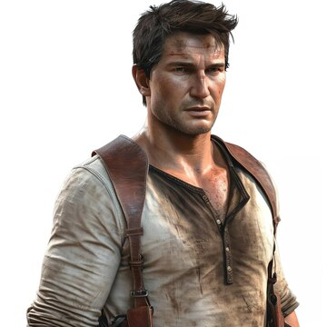

Nathan Drake é o personagem principal da franquia de videojogos Uncharted, criada pela empresa Naughty Dog, ele apenas não é um personagem jogável no jogo "Uncharted: The Lost Legacy".
A série Uncharted é uma das franquias mais famosas dos games, sendo um exclusivo da sony(Playstation), Drake como o rosto mais famoso da franquia, pode-se dizer que é um dos personagens mais famosos e icônicos do mundo dos games.

| Característica | Detalhe |
|---|---|
| nome: Nathan Morgam | nome adotado: Nathan Drake |
| Apresenta no final da série ser um homem de meia-idade | no final da série, Nathan tem aproximadamente 40 Anos |
| tem como atividade a Exploraçâo | é um caçador de tesouros/Ladrão profissional |
para saber mais, visite a wiki do Nathan Drake
Site desenvolvido pelo aluno Lucas Gabriel oliveira Reis Dos Santos, do 2° TINF - IFTM Campus Patrocínio
Easter egg "clique aqui"